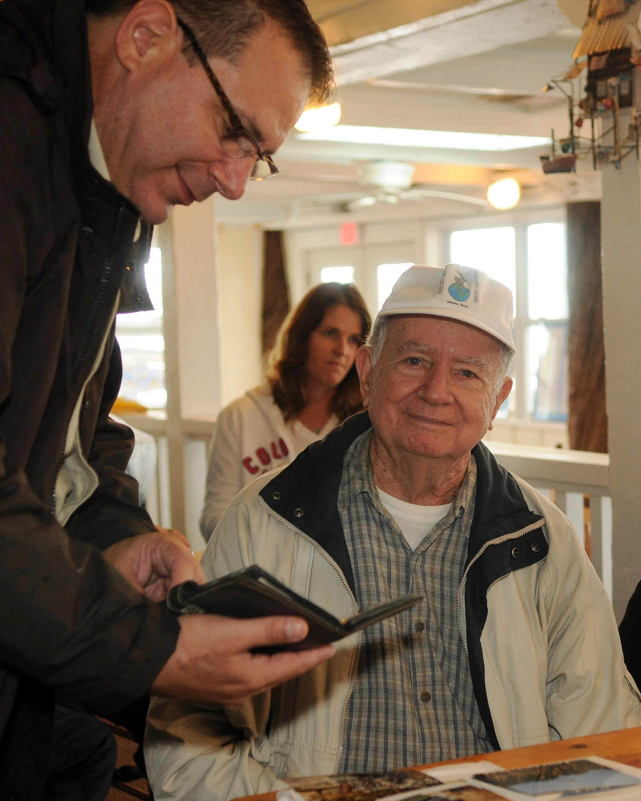

Bir odadan çıkarken anahtarını nereye koyduğunu hatırladığını düşün. Belki de elinde anahtarla odaya girdiğini bildiğin için zihnin boşluğu tamamladı. Bu tür gündelik örnekler, belleğin yalnızca depolama değil, aynı zamanda yeniden kurma işi olduğunu gösterir. Yanlış anı, yaşanmamış ya da farklı yaşanmış bir olayın hatırlandığına dair öznel deneyimdir; ancak her unutma, tahmin veya ayrıntı hatası “yanlış anı” değildir.
Hatırlamak, kaydı oynatmak değil
Bir olay sırasında dikkatimiz her ayrıntıyı aynı güçte işlemez. Daha sonra hatırlarken ana hatları, önceki bilgilerimizi ve sonradan duyduklarımızı bir araya getiririz. 2025 tarihli kapsamlı bir derleme, insan ve hayvan araştırmalarında belleğin güncellenebilen, değişebilen bir süreç olduğunu; bu değişimin bazen uyum sağladığını, bazen de hatırlananı çarpıtabildiğini özetliyor.
Bu, anılarımızın tümüyle güvenilmez olduğu anlamına gelmez. Bellek çoğu gündelik durumda iş görür; fakat anının canlı, ayrıntılı veya kişiye çok gerçek gelmesi tek başına her ayrıntının doğruluğunu garanti etmez.
Sonradan duyulan bilgi anıyı nasıl etkileyebilir?
Psikolojide yanıltıcı bilgi etkisi denilen olguda, kişi bir olaya tanık olduktan sonra o olay hakkında yanıltıcı bir ayrıntıyla karşılaşır. Daha sonraki hatırlama, ilk deneyimin izleriyle bu yeni bilginin birbirine karışmasından etkilenebilir. Elizabeth Loftus’un bellek araştırmalarını değerlendiren derlemesi, bu etkinin farklı deney düzeneklerinde incelendiğini ve her koşulda aynı biçimde ortaya çıkmadığını vurgular.
Etkiyi göstermek için kullanılan laboratuvar çalışmaları, anıların nasıl etkilenebileceğine dair mekanizmaları araştırır; tek başına belirli bir kişinin gerçek yaşam anısının yanlış olduğunu kanıtlamaz. Birinin anısını sorgularken yönlendirici soru sormak veya tekrar tekrar aynı varsayımı sunmak bu nedenle dikkat gerektirir.
Çağrışım da eksik parçaları tamamlayabilir
Bazı deneylerde katılımcılara aynı temayla ilişkili kelimeler gösterilir; daha sonra gösterilmemiş ama temaya uyan bir kelimeyi gördüklerini söyleyebilirler. Bu tür “çağrışımla oluşan yanlış hatırlama” araştırmaları, belleğin yalnızca tek tek ayrıntıları değil, anlam ve özü de kullandığını gösterir.
Bu deneyler, katılımcıların her zaman ayrıntılı bir sahte yaşam olayı yaşadığı anlamına gelmez. Araştırmacıların ölçtüğü şey, belirli bir görevde bir öğenin tanıdık gelmesi veya sunulmuş gibi hatırlanmasıdır. Laboratuvar bulgusunu gerçek hayattaki travmatik anılara doğrudan genellemek doğru olmaz.
Duygular ve yanlış bilgi: tek bir kural yok
Duygusal olaylar bazı ayrıntıları daha iyi hatırlamamıza yardımcı olabilir; başka ayrıntıları gölgede bırakabilir de. Duygu ile yanıltıcı bilgiye açıklık arasındaki ilişkiyi inceleyen 2023 sistematik derleme, bu konuda çok sayıda çalışmayı bir araya getiriyor. Sonuçları, duygunun her zaman anıyı koruduğu veya her zaman bozduğu gibi basit bir kuralı desteklemiyor; etki, incelenen duyguya ve araştırma yöntemine göre değişebiliyor.
Benzer biçimde, bir anıyı tekrar tekrar düşünmek ona aşinalık kazandırabilir ama aşinalık doğruluğun kanıtı değildir. Öte yandan anıdan emin olmak da otomatik olarak yanlış olduğu anlamına gelmez. Doğruluk; ne zaman, hangi koşulda ve hangi bilgiyle hatırlandığı gibi unsurlardan etkilenir.
Yanlış anı araştırmaları neyi kanıtlamıyor?
- Herkesin kolayca herhangi bir olaya inandırılabileceğini göstermiyor.
- Bir anının yanlış olduğunun, sırf yoğun veya duygusal olduğu için anlaşılabileceğini göstermiyor.
- Gerçek olaylara ilişkin belirli bir kişinin anısının, genel laboratuvar bulgularıyla doğrulanabileceğini ya da çürütülebileceğini göstermiyor.
- Tek başına bir anı raporunun adli veya klinik kararlarda yeterli kanıt olduğunu göstermiyor.
Özellikle geçmişte yaşandığı iddia edilen olayları “hatırlatmayı” amaçlayan yönlendirici yöntemler ciddi etik sorunlar doğurabilir. Bu yazı bir teşhis ya da adli değerlendirme rehberi değildir; gerçek bir olayla ilgili kararlar bağımsız kanıtlara ve nitelikli uzman değerlendirmesine dayanmalıdır.
Kaynaklar
- Brunswick, C. A. et al. (2025). “Not the same as it ever was: A review of memory modification, updating, and distortion in humans and rodents.” Neuroscience & Biobehavioral Reviews, 174, 106195. PubMed Central tam metni · doi:10.1016/j.neubiorev.2025.106195.
- Sharma, P. R., Wade, K. A. & Jobson, L. (2023). “A systematic review of the relationship between emotion and susceptibility to misinformation.” Memory, 31(1), 1–21. PubMed kaydı · doi:10.1080/09658211.2022.2120623.
- Loftus, E. F. (2005). “Planting misinformation in the human mind: A 30-year investigation of the malleability of memory.” Learning & Memory, 12(4), 361–366. PubMed kaydı · doi:10.1101/lm.94705.
Kaynaklar 8 Kasım 2026 tarihinde kontrol edildi. PubMed, ABD Ulusal Tıp Kütüphanesi’nin bilimsel yayın dizinidir; indekslenmek, tek başına bir kurumun sonuçları onayladığı anlamına gelmez. Özet, hakemli dergi makaleleri ve sistematik derlemelerle sınırlıdır.